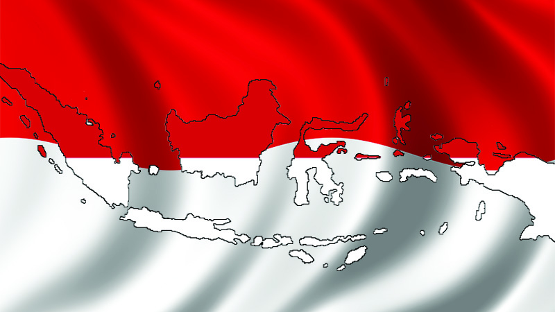
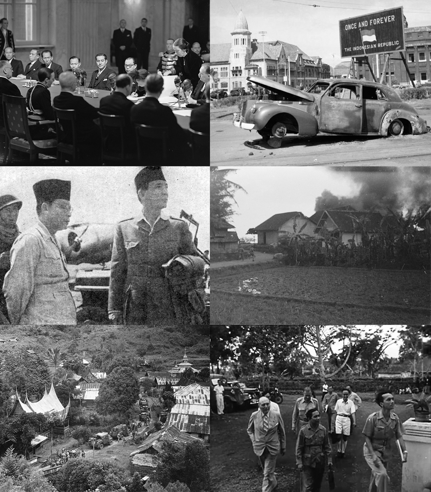
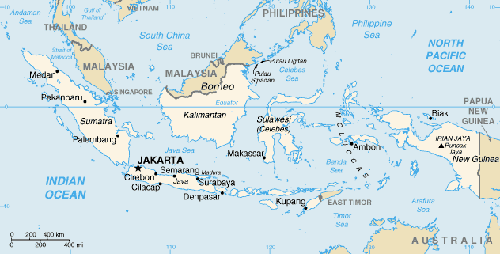

Sejarah Indonesia
Indonesia, secara resmi dikenal sebagai Republik Indonesia atau lengkapnya Negara Kesatuan Republik Indonesia, adalah sebuah negara kepulauan yang terletak di Asia Tenggara. Negara ini melintasi garis khatulistiwa dan terletak di antara daratan Asia dan Oseania, sehingga sering disebut sebagai negara yang berada di antara dua benua, serta diapit oleh Samudra Pasifik dan Samudra Hindia. Indonesia merupakan negara terluas ke-14 di dunia, dan juga merupakan negara kepulauan terbesar dengan luas wilayah sekitar 1.904.569 kilometer persegi. Indonesia juga memiliki pulau terbanyak ke-6 di dunia, dengan jumlah mencapai 17.504 pulau. Kepulauan Indonesia sering disebut dengan sebutan Nusantara.
Selain itu, Indonesia juga merupakan negara dengan jumlah penduduk ke-4 terbanyak di dunia, dengan populasi mencapai 277.749.853 jiwa pada tahun 2022. Indonesia juga merupakan negara dengan jumlah penduduk Muslim terbanyak di dunia, dengan lebih dari 238.875.159 jiwa atau sekitar 86,9% penduduknya beragama Islam. Negara ini memiliki keragaman etnis, budaya, dan ras yang mirip dengan Amerika Serikat.
Indonesia berbatasan darat dengan Malaysia di Pulau Kalimantan dan Sebatik, dengan Papua Nugini di Pulau Papua, serta dengan Timor Leste di Pulau Timor. Sementara itu, negara-negara yang berbatasan laut dengan Indonesia meliputi Singapura, Filipina, Australia, Thailand, Vietnam, Palau, dan wilayah persatuan Kepulauan Andaman dan Nikobar, India.
Indonesia adalah negara kesatuan dengan bentuk pemerintahan republik yang berlandaskan pada konstitusi yang sah, yaitu Undang-Undang Dasar Negara Republik Indonesia Tahun 1945 (UUD 1945). Berdasarkan UUD 1945, DPR (Dewan Perwakilan Rakyat), DPD (Dewan Perwakilan Daerah), dan Presiden dipilih dalam pemilihan umum. Ibu kota Indonesia saat ini adalah Jakarta, tetapi pada tanggal 18 Januari 2022, pemerintah Indonesia telah menetapkan Ibu Kota Nusantara yang terletak di Pulau Kalimantan, khususnya di Kabupaten Penajam Paser Utara, untuk menggantikan Jakarta sebagai ibu kota yang baru. Proses peralihan ibu kota masih berlangsung hingga tahun 2022.
Sejarah Indonesia telah dipengaruhi oleh berbagai bangsa pendatang dan penjajah. Kepulauan Indonesia telah menjadi wilayah perdagangan yang penting sejak abad ke-7, terutama ketika Sriwijaya, kerajaan dengan latar belakang agama Hindu-Buddha, berdiri dan berpusat di Palembang. Kerajaan Sriwijaya menjalin hubungan perdagangan dan agama dengan bangsa Tionghoa, India, dan Arab. Agama dan budaya Hindu-Buddha tumbuh dan berkembang di kepulauan Indonesia dari awal abad ke-4 hingga abad ke-13 Masehi.
Kemudian, pada abad ke-8 hingga abad ke-16, pedagang dan ulama dari Jazirah Arab datang ke Indonesia, membawa agama dan budaya Islam. Pada akhir abad ke-15, bangsa-bangsa Eropa, terutama Belanda, tiba di Indonesia dan bersaing untuk menguasai perdagangan rempah-rempah di wilayah Maluku selama Zaman Penjelajahan. Setelah berada di bawah kolonial Belanda, Indonesia yang dulu disebut Hindia Belanda, akhirnya memproklamasikan kemerdekaannya pada tanggal 17 Agustus 1945, di akhir Perang Dunia II.
Setelah mencapai kemerdekaan, Indonesia menghadapi berbagai tantangan dan masalah, termasuk bencana alam, korupsi yang merajalela, konflik sosial, gerakan separatis, proses demokratisasi, serta periode perkembangan sosial, ekonomi, politik, dan modernisasi yang cepat.
Indonesia terdiri dari berbagai kelompok etnis, bahasa, dan agama yang beragam. Berdasarkan asal-usul etnis, Indonesia terdiri dari masyarakat pribumi dari kelompok etnis Austronesia dan Melanesia, di mana kelompok etnis Austronesia adalah yang terbesar dan umumnya mendiami bagian barat Indonesia. Di antara mereka, kelompok etnis Jawa dan Sunda merupakan kelompok etnis terbesar, yang mencakup sekitar 57% dari total penduduk Indonesia. Semboyan nasional Indonesia, "Bhinneka Tunggal Ika" (Beda-beda tapi tetap satu), mencerminkan keragaman sosial dan budaya yang menyatukan bangsa ini. Selain memiliki populasi yang padat dan wilayah yang luas, Indonesia juga menjadi rumah bagi salah satu tingkat keanekaragaman hayati terbesar di dunia, menduduki peringkat kedua secara global.
Indonesia merupakan anggota berbagai organisasi internasional, termasuk Perserikatan Bangsa-Bangsa (PBB), Perhimpunan Bangsa-Bangsa Asia Tenggara (ASEAN), Gerakan Non-Blok (NAM), Konferensi Asia-Afrika (AAC), Kerja Sama Ekonomi Asia Pasifik (APEC), Organisasi Kerja Sama Islam (OKI), dan G20.